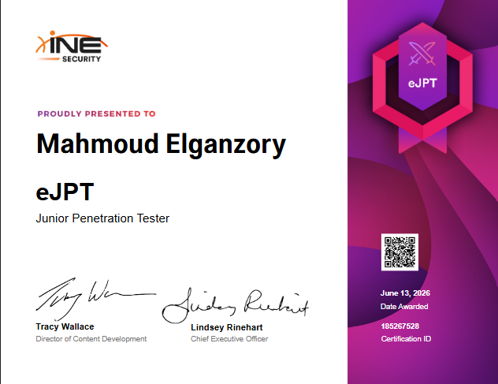

eJPT Exam Writeup
Junior Penetration Tester · June 2026 · Mahmoud Elganzory
Overview
The eJPT (Junior Penetration Tester) is a practical, entry-level penetration testing certification offered by INE Security. Unlike traditional multiple choice exams, the eJPT places you inside a real lab environment where you are expected to perform a full penetration test against a network of machines and answer questions based on your findings.
There is no way to guess your way through it — every answer requires real enumeration, exploitation, or post-exploitation work performed live against the target network.
Exam Domains
The 45-question exam is divided across four core domains:
- Assessment Methodologies — Network enumeration, service identification, vulnerability research
- Host & Network Pentesting — Exploitation, pivoting, brute force, hash cracking
- Web Application Pentesting — Web app enumeration, vulnerability identification, exploitation
- Host & Network Auditing — Post-exploitation, credential harvesting, file transfers
Preparation
I prepared through the INE Penetration Testing Student (PTS) course, which covers all topics tested in the exam. The course is well structured and provides enough hands-on labs to build the necessary skills before sitting the exam.
Key areas I focused on:
- Network scanning and enumeration with Nmap
- Web application testing and CMS exploitation
- Metasploit Framework usage
- Pivoting and network routing through compromised hosts
- Password attacks and hash cracking
- Windows and Linux post-exploitation techniques
Exam Methodology
The environment simulates a real-world corporate network. I followed a structured, methodical approach rather than rushing into exploitation:
- 1 Reconnaissance — Host discovery across the target subnet to map all live hosts before touching anything.
- 2 Enumeration — Detailed service and version scans against every live host to identify running services, OS versions, and potential attack vectors.
- 3 Web Application Testing — Investigated all web services across the network, identifying CMS platforms, versions, and misconfigurations.
- 4 Exploitation — Used identified vulnerabilities to gain initial footholds on target systems.
- 5 Post-Exploitation — Enumerated compromised systems for credentials, sensitive files, and internal network information.
- 6 Pivoting — Routed traffic through a compromised dual-homed host to reach internal network segments and continue enumeration deeper into the network.
- 7 Privilege Escalation — Escalated privileges on both Linux and Windows hosts to achieve full system access.
- 8 Flag Retrieval — Collected dynamic flags from compromised systems as direct proof of access for each exam question.
Tools Used
Domain Results
| Domain | Score | |
|---|---|---|
| Assessment Methodologies | 94% | |
| Host & Network Pentesting | 80% | |
| Web Application Pentesting | 100% | |
| Host & Network Auditing | 90% | |
| Overall | 91% |
Certificate

Thoughts
The eJPT is a solid entry-level certification for anyone getting into offensive security. It tests real skills in a real environment, and the 70% pass threshold is fair while still requiring genuine effort and practical understanding.
The exam rewards a methodical approach. Rushing into exploitation without proper enumeration will leave gaps. Taking time to fully map the network before attacking anything makes the whole process smoother and faster — not slower.
For anyone considering it, complete the INE PTS course first, get comfortable with Metasploit, and practice basic pivoting techniques before sitting the exam. If you put in that work, passing is straightforward.